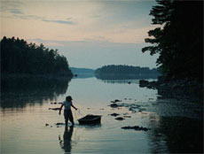

|
DOUBLE TIDE
Sharon Lockhart | USA, Austria 2009 | 99 min.
Material: 16mm
Format: BluRay
Original language: no dialogues
Camera: Richard Rutkowski
Production: Lockhart Studio, Los Angeles Print/Sales: Arsenal Berlin
Twice a day the female clam digger drags the heavy sled she uses for her work onto the mudflats. Once when the sun lights up the landscape at dawn and a second time when it renders it in glowing colors at sunset. She spends 45 minutes making her way from the shore into the vastness left behind by the low tide, and then another 45 making her way back to the shore – 45 minutes during which the flat image of the screen expands into the depth of space. She wades slowly through the water, bending over every couple of meters to bury her gloved hands deep in the mud.
DOUBLE TIDE, Sharon Lockhart's fourth film about work (after NO, LUNCH BREAK and EXIT), introduces us to a form of labor most of us are as little aware of as we are of the fact that there are only very few days on which low tide occurs twice during daylight hours in Maine. – Stefanie Schulte Strathaus
Sharon Lockhart was born in Norwood, Massachusetts, in 1964. She studied in California, at the Art Center College of Design in Pasadena and at the San Francisco Art Institute. Her work has been displayed at numerous group and solo shows around the world, and her films have been screened in the United States, Europe and Japan. She is currently an associate professor at the Roski School of Fine Arts at the University of Southern California. She lives and works in Los Angeles.
Films: 2009 Double Tide, Podwórka (UNDERDOX 05) | 2008 Lunch Break (UNDERDOX 05), Exit | 2005 Pine Flat | 2003 No | 1999 Teatro Amazonas | 1997 Goshogaoka | 1994 Khalil, Shaun, A Woman Under the Influence
back
|